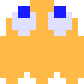

Клайд
Клайд является одним из четырех главных призраков в серии Pac-Man. Пока остальные три призрака гоняются за Пакманом, Клайд будет заниматься своими делами. Его обычно изображают как наименее умного и самого смиренного призрака.
Поведение
Если Клайд находится дальше 8 клеток от Пакмана, то он использует в качестве цели самого Пакмана, как Блинки. Если же Пакман ближе 8 клеток, то Клайд стремится к левому нижнему углу, как при рассеивании.
|
Клайд
|
|
|

|
|
| Имя |
Поки (англ. Pockey) |
| Прозвище |
Клайд (англ. Сlyde) |
| Японское имя |
Отобокэ (яп. お惚け, глупый) |
| Японское прозвище |
Гудзута (яп. 愚図た, медленный) |
| Пол | Мужской |
| Вид | Призрак |